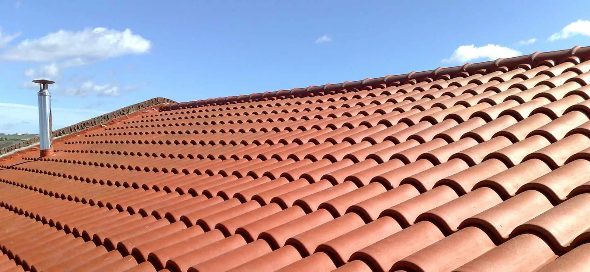

When it comes to weather, Salt Lake City is known for its large temperature variations and massive storms. So, the roofs in this part of Utah are under a lot of stress from monsoons and even tornados. Luckily, you can maintain your property in excellent condition by re-roofing it from time to time. To help you with that seemingly daunting task, we will now cover the key Salt Lake City re-roofing requirements and options.
What Is Re-Roofing and When Does a Property Need One?
Contrary to popular belief, re-roofing, or overlaying, is not the same as replacing the roof. It does not involve the replacement of the entire structure of the roof but only of some roofing materials. Therefore, overlaying is one of the fastest and most cost-efficient ways to restore a roof.
Usually, there are a few giveaway signs that your roof needs a re-roofing job. For the most part, those include:
- Leaks
- Mold
- Damaged insulation or ceilings
- Rotting roof materials

Still, it’s always best to call in expert roofers that will carry out an inspection. What’s more, professionals can help you choose the most suitable materials for your property. For instance, some of the options on the market include metal roofing, asphalt shingles, and slate tiles.
What You Need to Know About Salt Lake City Re-Roofing
According to Utah’s building code, re-roofing is not a structural improvement but a general maintenance job. Despite that, the state has strict rules about it that you need to follow. Otherwise, you may end up with a hefty fine.
Hire Salt Lake City Re-Roofing Experts
The state does not always obligate property owners to use professional re-roofing services. Still, you will make your life much easier if you leave the repairs to the experts. After all, they have the training and experience to get the job done properly. Plus, roofing contractors can do all the paperwork for you.
You May Need a Permit
In Utah, only cosmetic repairs, such as painting, do not call for a permit. So, a roof overlaying can’t be done without a document from the Permits Office.
Usually, you can apply for a permit when the property is residential and you live there permanently. In most other cases, however, the document must be obtained by your contractor.
As part of the permit application process, you or your contractor will need to fill in Salt Lake City’s re-roofing questionnaire. In this form, you must provide details on the proposed roofing materials. So, make sure you schedule the roof inspection in advance. By doing so, you will get a better idea of the specifications of the repair job.
The Law May Prohibit You From Re-Roofing Your Property
Unfortunately, the state of Utah may not allow you to overlay your roof. For example, you won’t get a permit if the re-roofing job increases the weight of the roof considerably. Sometimes, properties with unenforced architectural elements are also bad candidates for roof overlaying.
In Conclusion
As you can see, roof repairs take a lot of preparation. So, to ensure that things go well, it’s best to get professional help. As one of the leading Salt Lake City re-roofing contractors, we at J&N Roofing will provide you with the quality you deserve.
Other Roofing Topics That Will Assist You With Answers
Looking for Affordable Roofing Assistance?
Get Your Roofing Repairs Done Before the Cold Weather Sets In
Need Handyman Roofing Services for Your Home?